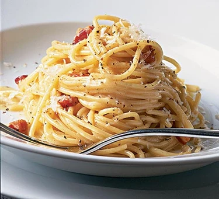

Carbonara
Spaghetti carbonara is an main course consisting of spaghetti with bacon and a creamy sauce made from eggs, Pecorino or Parmesan and black pepper.
£10.50
£10.50

Mac n' cheese
A pasta dish made from a cheesy sauce, usualy consisting of various cheeses, to create a warm and tasty meal
£10.50
£10.50